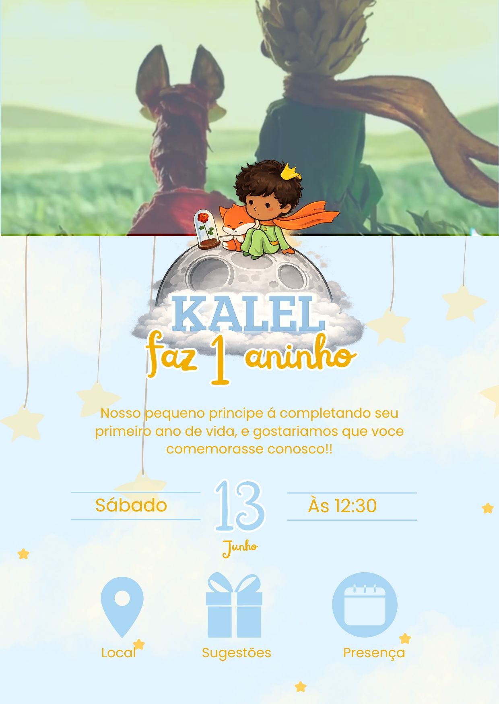
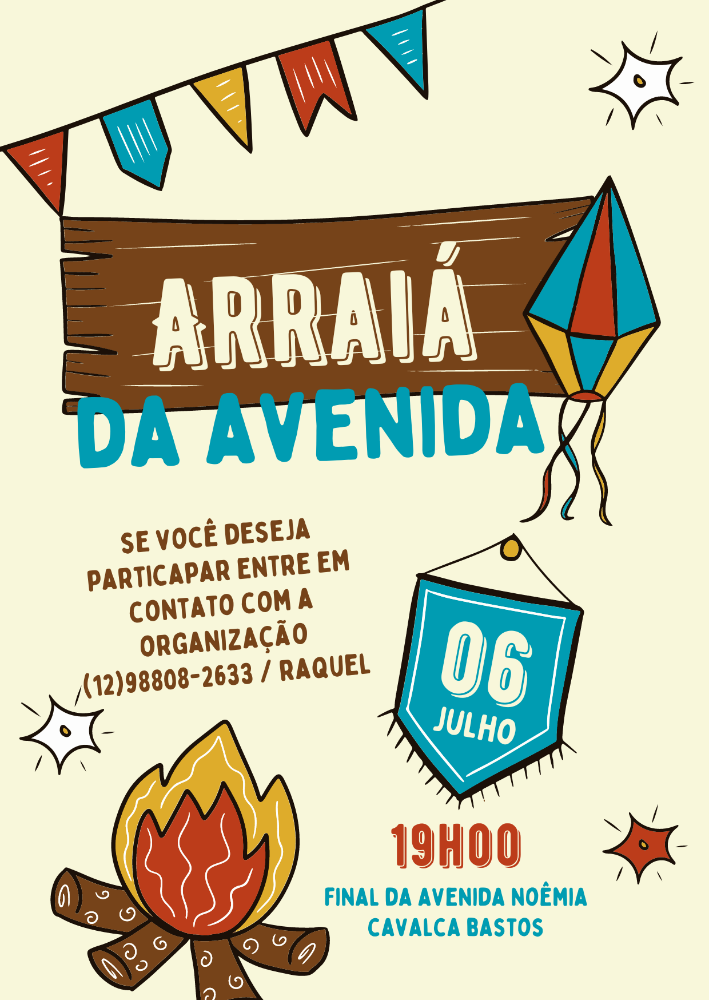
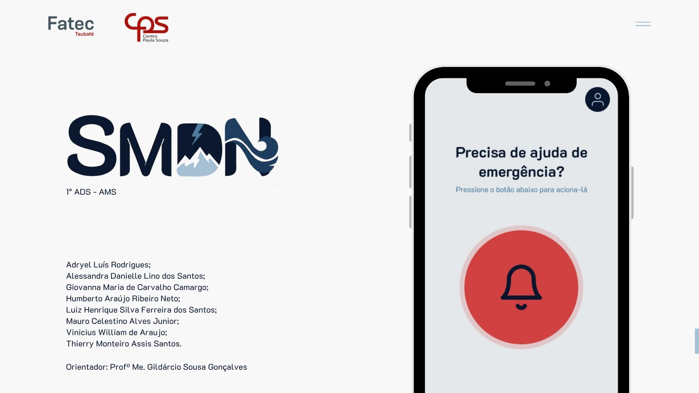

Social DesignConvite Digital — Aninversário de 1 ano
Tema: O Pequeno Príncipe
Projeto de convite personalizado. Foco em composição lúdica, tipografia infantil e harmonização de cores pastéis.
Social Design
Convite Digital — Primeira Eucaristia
Tema: Primeira Eucaristia
Convite clean e elegante para celebração religiosa, com tipografia refinada e elementos dourados.

Social DesignConvite Festa Cultural
Composição vibrante e temática para evento comunitário junino.
 UI/UX Design
UI/UX Design
SMDN — Monitoramento de Desastres
Interface de alta fidelidade para dashboard de autoridades e aplicativo móvel de emergência.

ApresentaçãoSprint Acadêmica — SMDN
Apresentação completa do Sistema de Monitoramento de Desastres Naturais. Inclui metodologias ágeis, stack tecnológica (Flutter/Supabase) e prototipagem.